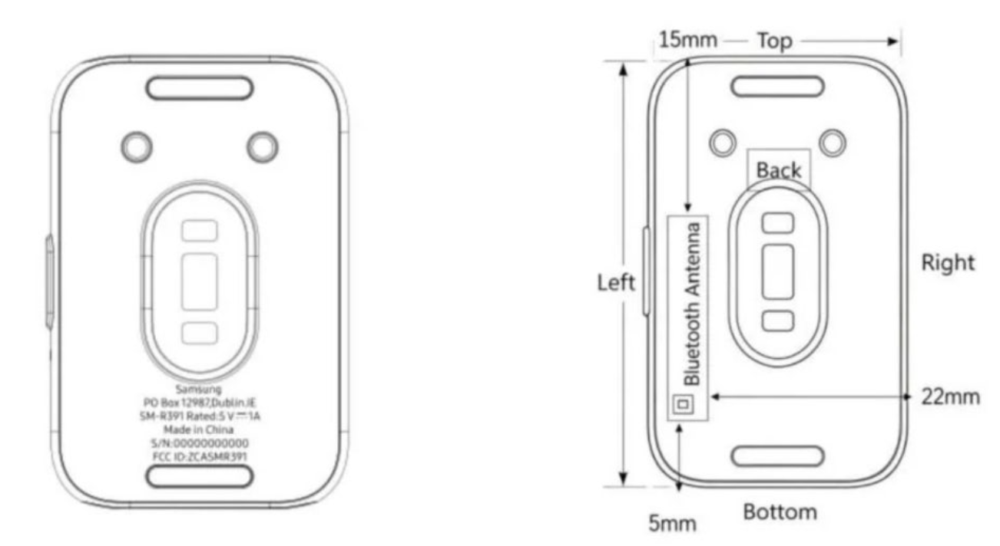
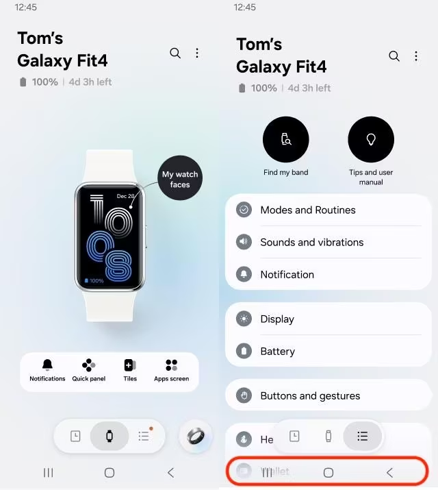

전작과 호환되는 버튼 눌러서 탈거 가능한 밴드
충전기는 지금 핏3과 호환되는 형태의 자석 포고핀 충전기
색상은 3종으로 출시 예정
블랙 렌더링
화이트 렌더링
라이트블루 렌더링
밝기 조절해서 자세히 보면 기존의 비대칭 형태(하단이 더 큼)가 아닌 상하단 동일베젤임이 보임

앱 내부에서 기존에 없던 'Wallet(지갑)' 메뉴 보임
핏4부터는 워치처럼 결제 가능할지도 모름
(물론 한국한정으로 개병신같은 열화판인 티머니결제가 될 가능성도 있음)
운영체제는 RTOS일테니 배터리 오래가는건 그대로일듯함
어메이즈핏 액티브고민중이였는데 얼마에 나오려나